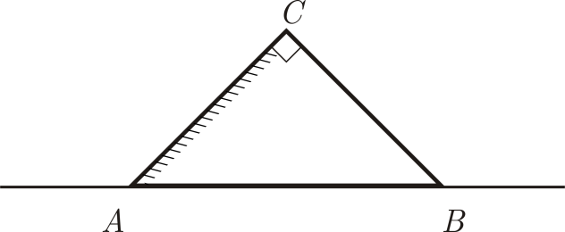
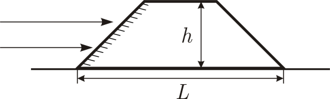

Y14 (2014) — English translation
In an isosceles rectangular glass prism, the base $АВ$ and side face $ВС$ are smooth, and the face $АС$ is matte. The base $АВ$ of the prism stands on the newspaper. The refractive index of the prism is $n = 1.6$.

The following questions consider a beam of rays incident on a prism parallel to the face $АВ$. To reverse (invert) an image, a Dove prism is often used, which is a truncated rectangular isosceles prism.

Source: https://pho.rs/p/3966